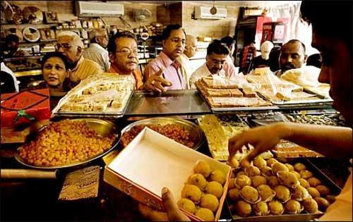
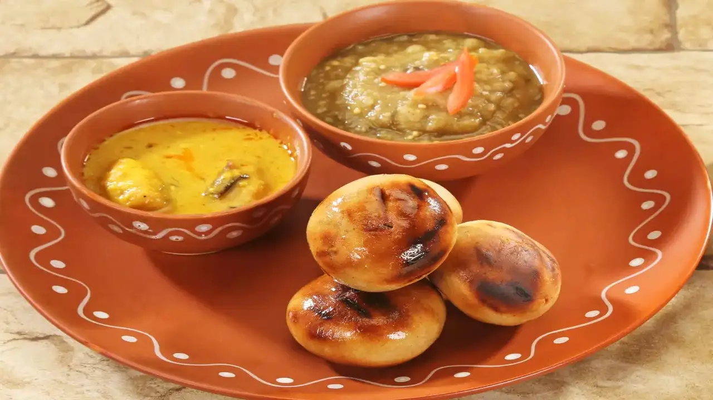

Explore the Delicious and Authentic Cuisine of Begusarai
Begusarai is known for its traditional and flavorful cuisine that reflects the agricultural and cultural richness of the region. One of the most iconic dishes of Begusarai is Litti-Chokha, a combination of wheat flour balls stuffed with roasted gram flour and served with mashed vegetables. Litti-Chokha is a staple in the region, often enjoyed as a hearty meal during festivals, family gatherings, and celebrations.
Another popular dish is Thekua, a sweet snack made from wheat flour, jaggery, and coconut. Thekua is a traditional sweet that is especially enjoyed during Chhath Puja and other local festivals. The crispy texture and the rich flavor of jaggery make Thekua a beloved treat for people of all ages.
Begusarai’s street food culture is vibrant and diverse, offering an array of snacks that are loved by locals and visitors alike. The streets of Begusarai are lined with vendors selling freshly fried pakoras, samosas, and dahi puris. These crispy treats are often enjoyed with spicy chutneys and tangy yogurt, making for a delicious snack on a hot day.
In addition to savory dishes, Begusarai also boasts a variety of traditional sweets. Anarsa, a popular dessert made from rice flour and jaggery, is a favorite during festivals like Diwali. The soft, sweet, and aromatic taste of Anarsa is a perfect representation of Begusarai’s culinary traditions.
Other notable sweets include the delectable Khaja, which is made from layers of dough soaked in sugar syrup, and the rich, creamy kheer made from rice, milk, and sugar. These desserts are often served during festive occasions and family gatherings.
 
The agricultural landscape of Begusarai plays a crucial role in shaping its food culture. The region is known for its fertile soil and abundant production of crops like rice, wheat, and lentils, which are the key ingredients in many of the city’s traditional dishes. The reliance on locally grown produce ensures that the food in Begusarai is both fresh and flavorful.
Rice is a staple food in Begusarai, and many dishes are centered around it. The famous Chawal-Puri, a combination of rice and deep-fried puris, is a common dish served during festivals and religious ceremonies. The use of locally sourced ingredients and traditional cooking methods is what gives Begusarai’s food its distinctive taste and texture.
In conclusion, Begusarai’s food culture is as rich and diverse as its history and traditions. From savory dishes like Litti-Chokha to sweet treats like Thekua and Anarsa, the food of Begusarai reflects the region's agricultural heritage and cultural vibrancy. The culinary traditions of Begusarai continue to thrive, providing locals and visitors with an authentic taste of the city’s history and culture.